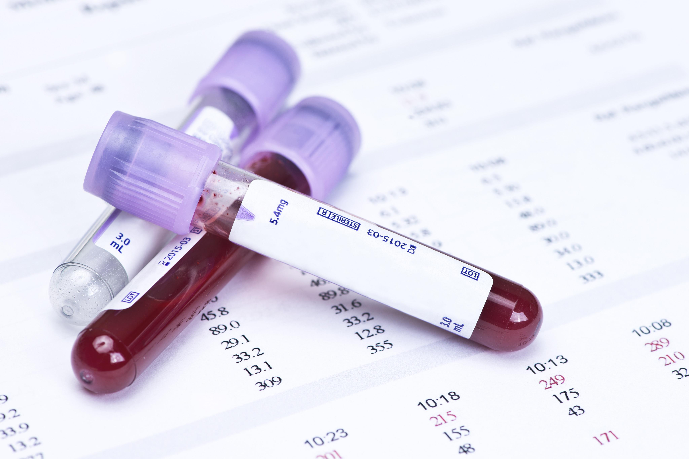
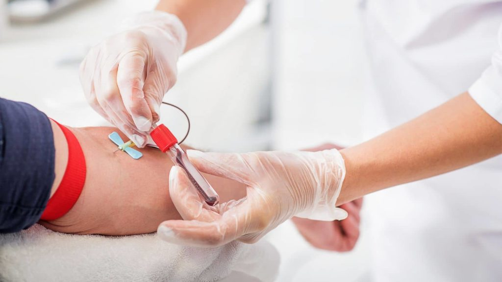

Cuidamos de ti y de tu salud en todo momento. Bienvenidos a nuestra clínica médica.
Cuidamos de ti y de tu salud en todo momento. Bienvenidos a nuestra clínica médica.
| Nombre del Servicio | Imagen | Descripcion | Boton |
|---|---|---|---|
Cuidados intensivos |
 |
La UCI es un área crítica del hospital para pacientes que necesitan atención médica intensiva debido a enfermedades graves o lesiones traumáticas. Contamos con un equipo altamente capacitado de médicos y enfermeras especializadas en cuidados intensivos para brindar atención personalizada y garantizar la recuperación de cada paciente. |
|
Cardiologia |
La Cardiología es el área de la medicina que se enfoca en el diagnóstico y tratamiento de enfermedades del corazón y del sistema circulatorio. |
||
Pediatria |
 |
La Pediatría es el área de la medicina que se enfoca en la atención médica de niños y adolescentes. |
|
Ginecologia |
 |
La Ginecología es el área de la medicina que se enfoca en la atención médica de la salud femenina, especialmente del sistema reproductivo. |
|
Radiodiagnostico |
 |
El Radiodiagnóstico es el área de la medicina que se enfoca en el uso de técnicas de diagnóstico por imagen para detectar enfermedades y lesiones en el cuerpo humano. |
|
Odontolgia |
 |
La Odontología es el área de la medicina que se enfoca en la salud dental y bucal. |
|
Cirugia |
 |
La Cirugía es el área de la medicina que se enfoca en la realización de procedimientos quirúrgicos para tratar enfermedades y lesiones en el cuerpo humano. |
|
Urgencias |
 |
La atención de Urgencias es un área crítica en la medicina que se enfoca en la atención médica inmediata y urgente para pacientes con enfermedades o lesiones que requieren atención médica inmediata. |
Estudios de la sangre |
Los análisis de sangre son una herramienta vital para evaluar la salud de una persona. A través de ellos, se pueden detectar diversas afecciones y enfermedades, lo que permite a los profesionales de la salud tomar decisiones informadas sobre el tratamiento adecuado. En nuestra clínica, contamos con tecnología de vanguardia para llevar a cabo una amplia gama de pruebas de laboratorio de alta calidad que pueden ayudar a mejorar la salud y el bienestar de nuestros pacientes |
Donacion de sangre |
La donación de sangre es un acto solidario y generoso que puede salvar vidas. En nuestra clínica, estamos comprometidos con la promoción y fomento de la donación de sangre para ayudar a aquellos que necesitan transfusiones de sangre para sobrevivir. Trabajamos con bancos de sangre confiables y seguimos estrictos protocolos de seguridad para garantizar que los donantes y los pacientes estén seguros en todo momento. Donar sangre es un acto sencillo, indoloro y que puede marcar una gran diferencia en la vida de las personas |
| Servicio | Horario | Ubicacion |
|---|---|---|
| Cuidados intensivos | Abierto las 24 horas | Ala Oeste, segundo piso |
| Cardiologia | Lunes a viernes de 8:00 am a 6:00 pm, sábados de 8:00 am a 12:00 pm | Ala Este, primer piso |
| Pediatria | Lunes a viernes de 9:00 am a 7:00 pm, sábados de 9:00 am a 1:00 pm | Ala Oeste, primer piso |
| Ginecologia | Lunes a viernes de 8:00 am a 6:00 pm, sábados de 8:00 am a 12:00 pm | Ala Este, segundo piso |
| Radiodiagnostico | Lunes a viernes de 8:00 am a 6:00 pm, sábados de 8:00 am a 12:00 pm. | Ala Oeste, primer piso |
| Odontolgia | Lunes a viernes de 9:00 am a 7:00 pm, sábados de 9:00 am a 1:00 pm | Ala Este, segundo piso |
| Cirugia | Lunes a viernes de 8:00 am a 6:00 pm | Ala Oeste, tercer piso |
| Urgencias | Abierto las 24 horas | Ala Este, primer piso |
| Laboratorio | Lunes a viernes de 7:00 am a 4:00 pm, sábados de 7:00 am a 12:00 pm. | Ala Oeste, segundo piso |